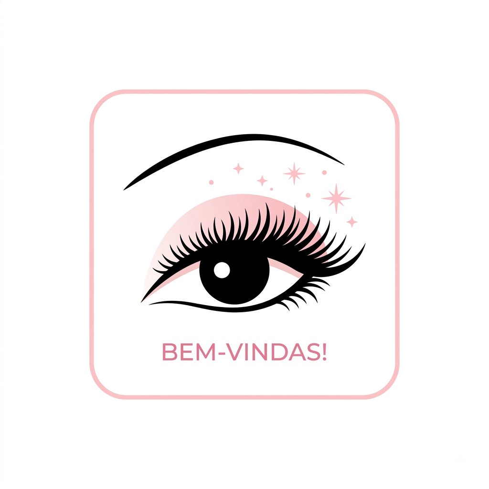
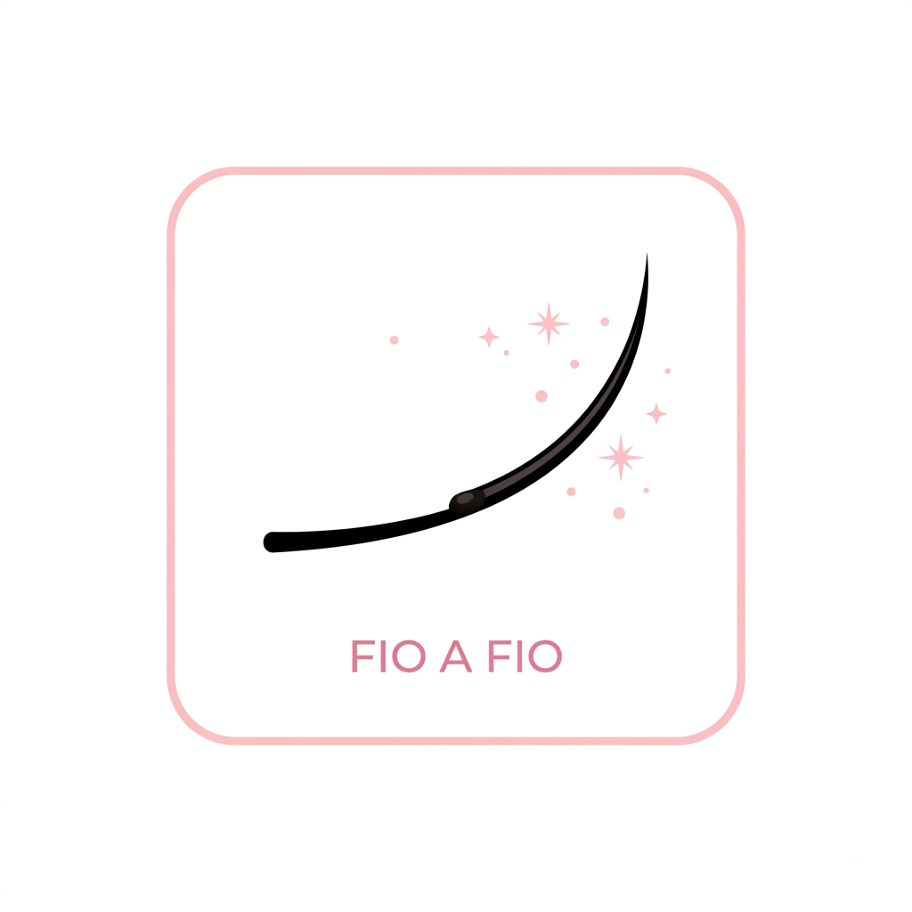
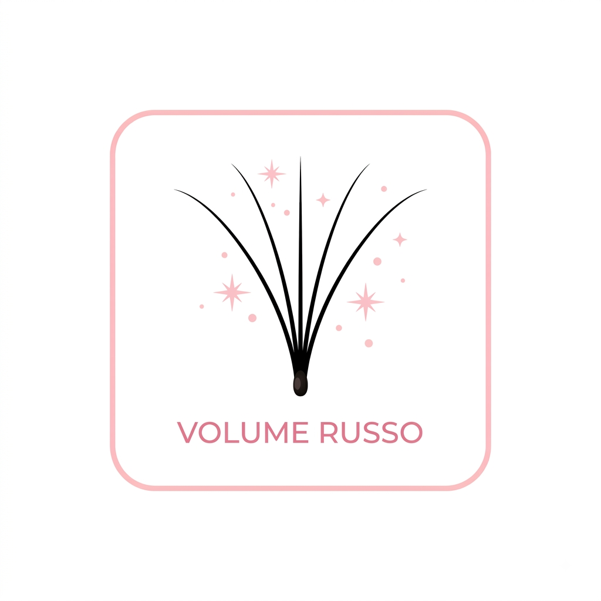
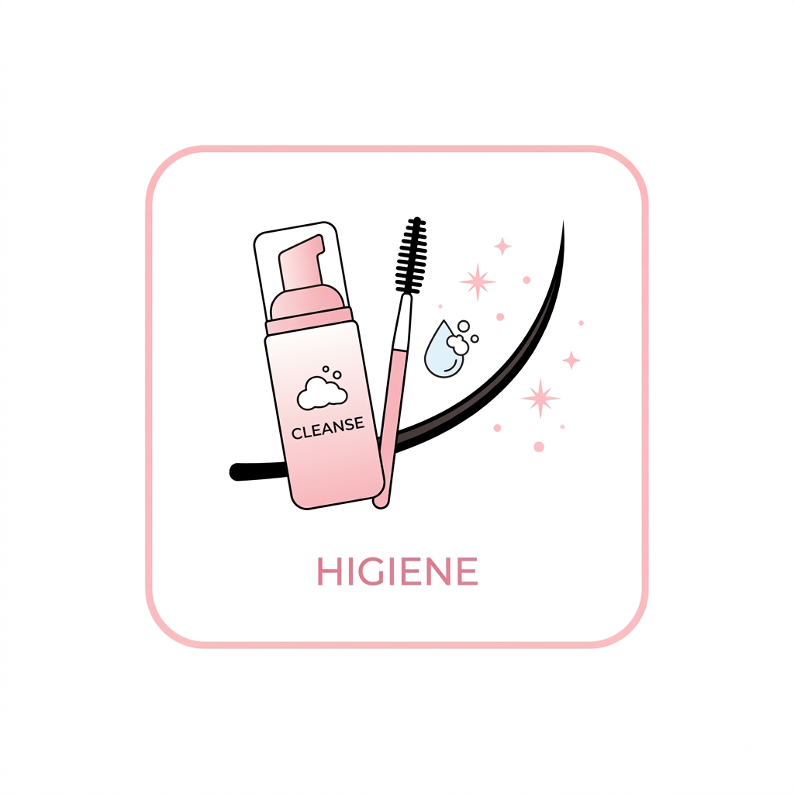
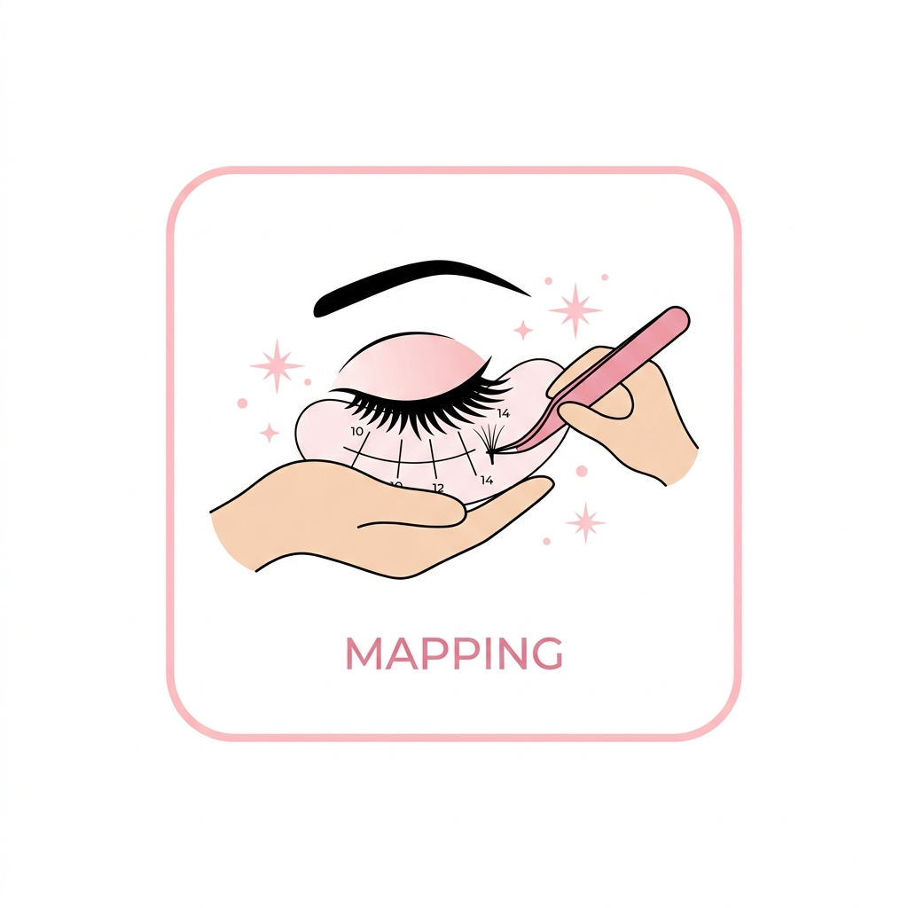

Bem-vindas ao meu Blog!
Por: Bianca Santos
Aqui vou compartilhar tudo sobre o universo das extensões. Preparem-se para dicas de cuidados e tendências!
Realçando olhares com técnica, carinho e muito brilho!

Por: Bianca Santos
Aqui vou compartilhar tudo sobre o universo das extensões. Preparem-se para dicas de cuidados e tendências!

Por: Bianca Santos
O método clássico é ideal para quem busca naturalidade. Ele apenas alonga e dá aquela curvatura de rímel perfeita.

Por: Bianca Santos
Você sabia a diferença? Enquanto o Russo foca em preenchimento denso, o Egípcio traz aquele efeito de "W" que amamos!

Por: Bianca Santos
Higiene é tudo! Use shampoo neutro de bebê diluído em água para manter seus fios limpos e a retenção em dia.

Por: Bianca Santos
Efeito Boneca ou Gatinho? O mapping certo depende do formato do seu olho para valorizar ainda mais sua beleza.

Por: Bianca Santos
Não esqueça: para manter o olhar impecável, o ideal é realizar a manutenção entre 15 a 20 dias.